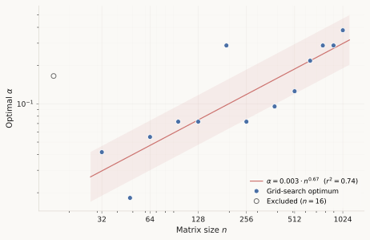
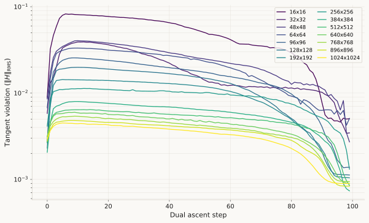
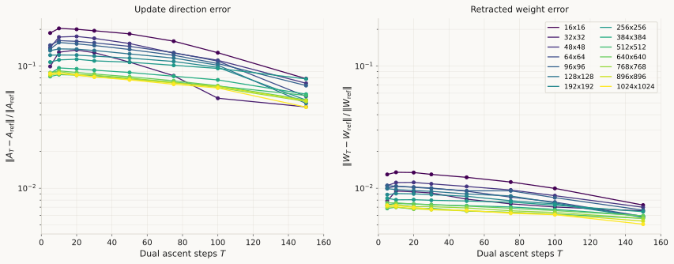
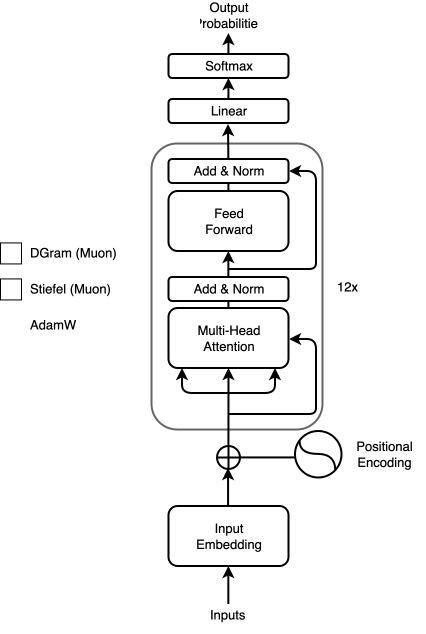
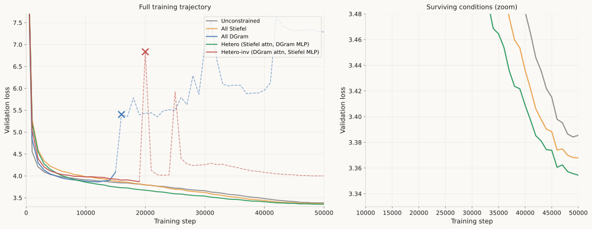
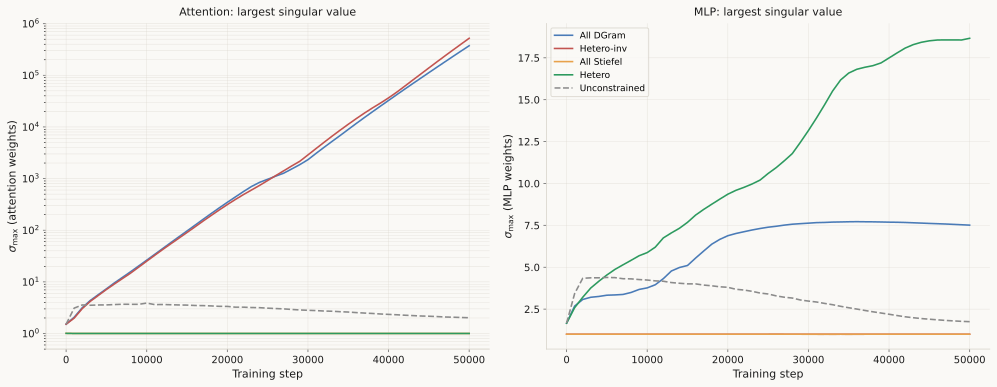
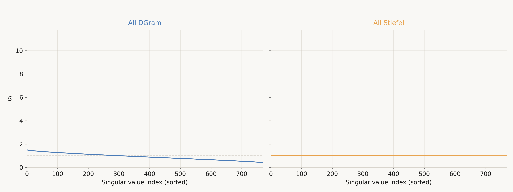

Different Layers, Different Manifolds: Scaling Manifold Muon to GPT-2
Manifold Muon constrains weights to have nice spectral properties. But which manifold should each layer live on? We tried five assignments on GPT-2 and only three survived.
Background
Muon [1] has become one of the most interesting optimizers of the past two years. The idea is simple: at every step, take the gradient matrix, compute its matrix sign (via Newton–Schulz iterations), and use that as the update direction. The matrix sign snaps all singular values to 1, which means every spectral direction gets the same treatment, with no direction preferred over another. This turns out to work remarkably well for training transformers, and Moonshot's team [2] showed it scales to trillion-parameter models.
But there's a question Muon doesn't answer. If we're going to orthogonalize the update, why not just enforce orthogonality on the weights themselves? That's the natural thing to do if you believe spectral balance is important. Rather than fixing the singular values of the update at every step, constrain the weights to live on a manifold where they already have the property you want.
This is exactly what Bernstein's Manifold Muon [3] does. The weights are constrained to a matrix manifold (the Stiefel manifold, where columns are orthonormal), and the optimizer solves a constrained optimization problem at every step: find the update that maximally decreases the loss subject to staying on the manifold. The solution involves a dual ascent procedure to find the right Lagrange multiplier, followed by a retraction back onto the manifold using msign. It's a beautiful piece of optimization, turning an implicit property (update orthogonalization) into an explicit structural constraint on the weight space.
Bernstein demonstrated that Manifold Muon works on CIFAR-10 with small MLPs. But two questions were left open:
Does it scale to transformers? The dual ascent procedure has hyperparameters (step size α, number of iterations) that were tuned for small matrices. Whether these choices transfer to the 768×768 matrices of GPT-2 is not obvious.
Which manifold is right for which layer? The Stiefel manifold is one choice, but it's not the only one. Keigwin's Gram-space [4] work suggests a weaker constraint, the DGram manifold, where W^\top W = I but individual singular values can vary, might be preferable in some settings. The Oblique manifold, where each column has unit norm but columns aren't required to be orthogonal, is yet another option. Transformers have qualitatively different layers: attention projections (Q, K, V, O) and MLPs (up-projection, down-projection). There's no a priori reason they should want the same geometry.
This post is about trying to answer both questions. We scale Manifold Muon to GPT-2 (124M parameters) pretraining on OpenWebText [5], and we test five different manifold assignments, varying what constraint each layer's weights live under. The headline result is that the answer to the second question is no, different layers don't want the same manifold: attention layers train stably on Stiefel but diverge on DGram, while MLPs prefer DGram. A heterogeneous assignment (Stiefel on attention, DGram on MLPs) outperforms every uniform choice.
Along the way, we also find that the dual ascent step size α needs to be scaled up by roughly 10 to 20 times from Bernstein's default when moving to 768×768 matrices, not because it fails to converge at small α, but because convergence becomes impractically slow. And we observe something that makes the whole thing computationally feasible: the retraction step absorbs most of the error from an under-converged dual ascent, so 20 iterations is enough in practice despite theory suggesting you'd want many more.
Scaling the dual ascent to 768x768
Bernstein's reference implementation uses \alpha = 0.01 and 100 dual ascent iterations, tuned against a 3-layer MLP on CIFAR-10. The weight matrices of that MLP, after the transposition that manifold_muon [6] applies internally, give dual ascent problems on n \times n matrices with n \in \{10, 64, 128\}. Transformer weight matrices are substantially larger. For GPT-2 small, the attention and MLP projection matrices produce dual ascent problems at n = 768. Whether Bernstein's \alpha = 0.01 remains a reasonable choice at this scale is an empirical question, so we asked it.
We ran dual ascent on random Gaussian (W, G) pairs, where W \in \mathbb{R}^{n \times n} is the weight matrix and G \in \mathbb{R}^{n \times n} is the gradient, with W initialized on the Stiefel manifold via msign. We swept across 14 matrix sizes from n = 16 to n = 1024 and 21 log-spaced values of \alpha from 0.002 to 0.5, where \alpha is the step size of the dual ascent updates on the Lagrange multiplier \Lambda. Each configuration was averaged over 10 random seeds. For each size, the optimal \alpha is the one that minimized the tangent violation \|H\|_{\text{RMS}} after 100 iterations, where H = P(W^\top A + A^\top W) measures how far the candidate update A \in \mathbb{R}^{n \times n} is from the tangent space at W. Here P is the self-adjoint projector that defines the manifold (for Stiefel, P is the identity, so H = W^\top A + A^\top W), and A is the current iterate of the dual ascent, reconstructed from \Lambda via the matrix sign function.
The result is a clear upward trend: larger matrices want a larger step size. A log-linear fit over n \geq 32 gives
\alpha_{\text{opt}}(n) \approx 0.003 \cdot n^{0.67}, \quad r^2 = 0.74.
The n = 16 case sits well above this trend line (observed \alpha = 0.17 against a prediction of 0.02) and is excluded from the fit. This is a regime where the dual ascent problem is small enough that almost any \alpha works, which is not the behaviour we care about for the transformer experiments that follow. Observed and predicted values for the fitted range are shown in Table 1.
| n | observed \alpha_{\text{opt}} | fit prediction | final \|H\|_{\text{RMS}} |
|---|---|---|---|
| 32 | 0.042 | 0.031 | 3.2e-3 |
| 64 | 0.055 | 0.050 | 2.5e-3 |
| 128 | 0.072 | 0.079 | 1.1e-3 |
| 256 | 0.072 | 0.125 | 1.1e-3 |
| 512 | 0.126 | 0.199 | 8.5e-4 |
| 768 | 0.288 | 0.258 | 6.6e-4 |
| 1024 | 0.379 | 0.316 | 5.6e-4 |

The more useful way to read this is in terms of Bernstein's default \alpha = 0.01, with the caveat that the tangent violation \|H\|_{\text{RMS}} is an internal convergence metric for dual ascent, not a direct measure of training quality. The retraction step that follows dual ascent partly absorbs violation error (we quantify this in the next section), and the Muon optimizer itself tolerates orthogonalization error up to \epsilon \approx 0.3 without training degradation [1]. So the numbers below describe how close dual ascent gets to its own optimality condition, not how close the resulting update is to the true steepest-descent direction.
At n = 64, the grid search over 21 log-spaced \alpha values returns a best final violation of 2.5 \times 10^{-3}. Bernstein's default \alpha = 0.01 reaches 3.3 \times 10^{-3} at step 100, about 33% higher than the grid-search best. At n = 768, the grid-search best is 6.6 \times 10^{-4}, while \alpha = 0.01 reaches 1.9 \times 10^{-3}, about 2.8 times higher. The size-to-size increase in the gap is consistent with the power-law prediction that the default moves further below the fitted optimum as n grows, but whether this matters for transformer training specifically is something our GPT-2 experiments below address, not something we can infer from \|H\|_{\text{RMS}} alone.
The convergence curves under the uniform choice \alpha = 0.1 illustrate what changes across scales.

Small matrices (n \leq 64) overshoot in the first few iterations because \alpha = 0.1 is above their optimum. At n = 64, the violation peaks around step 10 at roughly 8 \times 10^{-2}, then drifts down over the remaining iterations to a final value of 5 \times 10^{-3}. Large matrices (n \geq 512) show a different pattern: the tangent violation sits on a plateau around 4 to 5 \times 10^{-3} for roughly the first 80 iterations and then drops sharply in the last 20, reaching the final value an order of magnitude below the plateau level. We do not have a mechanistic explanation for the plateau. Bernstein's linear decay schedule \alpha_t = \alpha (1 - t/T) takes the effective step size to zero at the end of the run, and it is plausible that the late drop reflects the iterates entering the converging regime only once \alpha_t has been sufficiently shrunk, but distinguishing this from convergence that would have happened under any schedule would require an ablation we have not performed.
For the transformer experiments in the rest of this post we fix \alpha = 0.1 as a single universal choice. This is not the per-size optimum at any of the scales we tested. The ratio to the per-size optimum stays inside a factor of 2 across n \in [32, 1024], and the gap is small enough that we prefer the simplicity of a single number to the complication of a size-dependent schedule.
Retraction absorbs dual ascent error
Section 2 established that running dual ascent for 100 iterations with \alpha = 0.1 brings the tangent violation to roughly 10^{-3} across matrix sizes. If Manifold Muon calls dual ascent inside every optimizer step of a transformer training run, 100 inner iterations per outer step is prohibitive: each inner iteration is one msign call plus a handful of matrix multiplications, and unconstrained Muon gets by with a single msign call per step. Naively, Manifold Muon would be around 100 times slower per step than Muon. The question this section addresses is whether we really need 100 inner iterations, or whether we can stop much earlier without meaningfully changing the result that is actually applied to the model.
The relevant observation is that dual ascent is not the last step of Manifold Muon. After the dual ascent inner loop produces an update direction A, the algorithm takes a step W - \eta A and then retracts back onto the Stiefel manifold via the matrix sign function:
W_{\text{new}} = \mathrm{msign}(W - \eta A) = U V^\top,
where U \Sigma V^\top is the SVD of W - \eta A. Because \mathrm{msign} keeps U and V but discards \Sigma (replacing every singular value with 1), any error in A that only affects the singular values of W - \eta A gets annihilated by the retraction. Only errors that rotate the left or right singular vectors survive. In effect, the retraction projects onto a submanifold defined only by the singular vectors, so any error in A that lives in the singular-value direction gets projected out. The quantity that actually matters for training, W_{\text{new}}, should therefore be more robust to early-stopped dual ascent than A itself.
To quantify this, for each of our 14 matrix sizes we ran dual ascent for 200 iterations (enough that the final update direction is effectively converged) and saved snapshots of A at intermediate step counts T \in \{5, 10, 20, 30, 50, 75, 100, 150\}. Calling the reference direction A_{\text{ref}} = A_{200} and the early-stopped direction A_T, we measured two quantities:
e_A(T) = \frac{\|A_T - A_{\text{ref}}\|_F}{\|A_{\text{ref}}\|_F}, \qquad e_W(T) = \frac{\|W_T - W_{\text{ref}}\|_F}{\|W_{\text{ref}}\|_F}
where W_T = \mathrm{msign}(W - \eta A_T) and W_{\text{ref}} = \mathrm{msign}(W - \eta A_{\text{ref}}), using \eta = 0.1 for the retraction step. The first quantity e_A(T) measures how much the update direction still changes if we keep iterating dual ascent past T; the second e_W(T) measures the same thing for the retracted weight that the optimizer actually applies. All values are averaged over 10 seeds.
The gap between e_A(T) and e_W(T) is substantial and consistent across sizes. Table 2 shows both quantities at T = 20 for a representative subset of sizes.
| n | e_A(20) | e_W(20) | e_A / e_W |
|---|---|---|---|
| 32 | 0.135 | 0.0094 | 14.5 |
| 64 | 0.159 | 0.0102 | 15.6 |
| 128 | 0.138 | 0.0096 | 14.4 |
| 512 | 0.085 | 0.0068 | 12.5 |
| 768 | 0.086 | 0.0071 | 12.1 |
| 1024 | 0.085 | 0.0070 | 12.2 |
At every size, the update direction is still 8 to 16% away from where it will end up, yet the retracted weight is already within 1% of its final value. The compression factor e_A / e_W sits in the range 12 to 16 across all 14 sizes we tested (the full sweep, including the sizes omitted from Table 2, stays within this band). The compression is essentially size-independent, which is what we would expect from a mechanism based on \mathrm{msign} as a projection: the projection operator is the same at every size, and so is the fraction of A's error that it discards.

The shape of the two curve families in Figure 3 carries additional information. On the left, e_A(T) is not monotonic: it rises in the first few iterations (because early dual ascent with \alpha = 0.1 overshoots, as we saw in Section 2) and only starts decreasing around T = 30. If we were reading the left panel alone, we might conclude that short dual ascent is actively harmful. On the right, e_W(T) is nearly flat: the retracted weight at T = 5 is essentially the same as at T = 100, within about a factor of 1.3. The retraction absorbs not just the final gap but the transient overshoot as well.
The practical implication is that the dual ascent step budget should be chosen based on e_W(T), not e_A(T) or \|H\|_{\text{RMS}}. At T = 20, e_W \approx 0.7\% across all sizes. For comparison, Muon itself tolerates orthogonalization error up to \epsilon \approx 0.3 in the matrix sign function without training degradation [1], which is two orders of magnitude looser. A 0.7% retracted-weight error per step is deep inside the regime where the outer training loop does not notice.
For the transformer experiments in the rest of this post, we fix dual ascent to 20 iterations. This brings the per-step overhead of Manifold Muon from about 100 times that of unconstrained Muon down to about 20 times based on msign call counts. The actual measured overhead on GPT-2 small is lower, as we report in Section 4, because AdamW [7] handles a significant fraction of parameters and that portion of each step is not slower.
Two caveats are worth stating. First, this analysis uses random Gaussian (W, G) pairs. During actual training, gradients have low-rank structure, weights are not exactly on the manifold between retractions (they drift slightly), and the distribution of A that dual ascent is trying to find is correlated with recent updates. The absorption factor might be different in that regime. Second, the absorption argument we gave is based on \mathrm{msign} throwing away the singular values of W - \eta A. This argument applies directly to the Stiefel retraction. For DGram the retraction is W \mapsto U V^\top \cdot \mathrm{diag}(\Sigma), which keeps the singular values, so the absorption effect may be weaker. We use the same 20-step budget for DGram in the experiments below, but an honest reading of Table 2 is that we have only verified the T = 20 choice for Stiefel.
Experiments: five manifold assignments on GPT-2
Sections 2 and 3 made Manifold Muon tractable at transformer scale. This section puts it to work. We train GPT-2 small (124M parameters) on OpenWebText with the nanoGPT training recipe [5] and ask a question Bernstein raises as an open problem: which manifold should each layer live on? The Stiefel manifold is the obvious choice if we want unit singular values. The DGram manifold, recently proposed by Keigwin [4], is a strictly weaker constraint: \mathrm{off}(W^\top W) = 0 forces the columns of W to be orthogonal but lets their norms vary. Both are sensible defaults, and there is no a priori reason transformers should prefer one over the other, or prefer the same choice for every layer.
We test five manifold assignments, summarized in Table 3.
| Condition | Attention (Q, K, V, O) | MLP (up, down) |
|---|---|---|
| Unconstrained | Muon (no manifold) | Muon (no manifold) |
| All Stiefel | Manifold Muon on Stiefel | Manifold Muon on Stiefel |
| All DGram | Manifold Muon on DGram | Manifold Muon on DGram |
| Hetero | Manifold Muon on Stiefel | Manifold Muon on DGram |
| Hetero-inv | Manifold Muon on DGram | Manifold Muon on Stiefel |
The Unconstrained condition is the baseline: plain Muon on every 2D weight, no manifold constraints, which matches how Muon is typically deployed in practice. All Stiefel and All DGram apply the same constraint to every weight matrix. Hetero puts attention on Stiefel and MLPs on DGram, reflecting the hypothesis that attention projections and MLP projections play different roles and might prefer different geometries. Hetero-inv is the ablation: the same asymmetry reversed. If Hetero works because asymmetric constraints are useful per se, both Hetero and Hetero-inv should do well. If it works because Stiefel is right for attention and DGram is right for MLPs, only Hetero should do well.
Figure 4 shows where each optimizer applies in the GPT-2 architecture for the Hetero condition.

All runs use the same hyperparameters apart from the manifold assignment. We use dual ascent with \alpha = 0.1 and 20 iterations, as justified in Sections 2 and 3. The learning rate for Manifold Muon and Muon is tuned for the Unconstrained baseline and reused across conditions. AdamW hyperparameters follow the nanoGPT defaults. Training runs for 50,000 steps on a single H100 with OpenWebText, which takes between 2 hours (Unconstrained) and 30 hours (All DGram, which has the slowest retraction) per condition. Validation loss is measured every 1000 steps on a held-out split.
Figure 5 shows the validation loss for all five conditions. The left panel shows the full trajectory; the right panel zooms in on the surviving conditions from step 10k onwards, where the separations become legible.

Two of the five conditions diverge. All DGram trains normally until around step 15000, then its validation loss starts drifting upward and settles into a chaotic plateau between 6 and 8 nats for the rest of the run. Hetero-inv trains stably until step 20000, at which point its loss spikes to about 7 nats, drops back to around 4.3 nats, spikes a second time at step 25000, and then oscillates around 4.0 nats for the remainder of training. Neither run produces NaN; both simply fail to make further progress. We discuss what goes wrong in both cases in the next two sections.
The three surviving conditions reach the following final validation losses, along with their wall-clock cost per step:
| Condition | Best val loss | Final @ 50k | Status | ms/step | ratio |
|---|---|---|---|---|---|
| Unconstrained | 3.3842 | 3.3855 | converged | 161 | 1.0x |
| All Stiefel | 3.3679 | 3.3679 | converged | 933 | 5.8x |
| All DGram | 3.8623 | 7.2871 | diverged @ 16k | 2186 | 13.6x |
| Hetero | 3.3544 | 3.3544 | converged | 1342 | 8.3x |
| Hetero-inv | 3.8684 | 3.9988 | diverged @ 20k | 1758 | 10.9x |
Hetero reaches a final validation loss of 3.3544 at step 50000, which is 0.013 nats below All Stiefel (3.3679) and 0.031 nats below Unconstrained (3.3855). These are small numbers in absolute terms and this is a single-seed run, so we do not claim the Hetero-vs-Stiefel gap is statistically resolved. The Unconstrained-vs-Hetero gap is larger and more robust. What is clear is that the asymmetric Hetero assignment is not harmful relative to either uniform alternative, and the symmetric reversal Hetero-inv is catastrophic. This asymmetry is the main finding of the post.
The wall-clock costs in the rightmost column of Table 4 are also worth looking at in their own right. Section 3 estimated the per-step overhead of Manifold Muon at around 20 times that of unconstrained Muon based on msign call counts alone. The measured overhead is 5.8x for All Stiefel and 8.3x for Hetero, noticeably better than the estimate. The discrepancy is because our estimate ignored the fact that AdamW is run on roughly 40% of the parameters (embeddings, LM head, LayerNorm), and that step doesn't get slower. All DGram is 13.6x, the slowest of the surviving or semi-surviving conditions, because DGram's retraction requires a full SVD while Stiefel's retraction is just another msign call.
The next two sections dig into the two main observations from Table 4: why Hetero beats All Stiefel and All DGram, and why the two diverged conditions diverge in the specific way they do.
Attention wants Stiefel, MLPs want DGram
The results in Table 4 invite a natural question: why does the direction of the asymmetry matter so much? Both Hetero and Hetero-inv apply one manifold to attention and the other to MLPs. Only the assignment direction differs. Yet Hetero converges to the best validation loss of any condition, and Hetero-inv diverges at step 20000. This section gives a theoretical argument for why this happens, grounded in the spectral properties of the two manifolds and the structure of the attention mechanism.
Stiefel and DGram: what the constraints actually fix
Both the Stiefel manifold and the DGram manifold are instances of the Gram-space framework introduced by Keigwin [4]. A weight matrix W \in \mathbb{R}^{m \times n} (with m \geq n) lives on a manifold defined by a self-adjoint projector P and a target matrix C via the constraint
P(W^\top W - C) = 0.
The two manifolds differ only in the choice of P:
Stiefel. Set P = \mathrm{Id} (the identity on symmetric matrices) and C = I_n. The constraint becomes
W^\top W = I_n.
Writing the SVD of W as W = U \Sigma V^\top, the constraint forces \Sigma = I, so every singular value of W equals 1. The condition number is \kappa(W) = \sigma_{\max}(W) / \sigma_{\min}(W) = 1, and the spectral norm is \|W\|_2 = 1.
DGram. Set P = \mathrm{Off} (the off-diagonal projector, which zeros out the diagonal of a symmetric matrix) and C = 0. The constraint becomes
\mathrm{off}(W^\top W) = 0,
which says that the off-diagonal entries of the Gram matrix vanish. Let w_1, \dots, w_n denote the columns of W. Then (W^\top W)_{ij} = w_i^\top w_j, and the constraint is
w_i^\top w_j = 0 \quad \text{for all } i \neq j.
The columns are pairwise orthogonal, but their norms \|w_i\| = \sqrt{(W^\top W)_{ii}} are unconstrained. The diagonal of W^\top W is exactly the vector of squared column norms, and because P = \mathrm{Off} does not touch the diagonal, these norms are free to vary during training.
To see what this means spectrally, observe that the SVD of a matrix with orthogonal columns takes a simple form. If the columns of W are orthogonal with norms \sigma_1, \dots, \sigma_n > 0, we can write
W = U \, \mathrm{diag}(\sigma_1, \dots, \sigma_n) \, V^\top,
where U \in \mathbb{R}^{m \times n} and V \in \mathbb{R}^{n \times n} have orthonormal columns. The \sigma_i are the singular values of W, and they equal the column norms. In particular, the spectral norm \|W\|_2 = \sigma_{\max}(W) = \max_i \|w_i\| is not bounded by any constraint. The condition number \kappa(W) = \sigma_{\max} / \sigma_{\min} is also unconstrained.
In summary:
| Property | Stiefel | DGram |
|---|---|---|
| Column orthogonality | enforced | enforced |
| Column norms | fixed at 1 | free |
| \|W\|_2 | = 1 | unbounded |
| \kappa(W) | = 1 | unbounded |
DGram is strictly weaker than Stiefel. Every Stiefel matrix satisfies the DGram constraint (orthogonal columns with all norms equal to 1 is a special case of orthogonal columns with arbitrary norms), but DGram matrices can have arbitrarily large or small singular values. The extra freedom in DGram is exactly the freedom to learn a per-column scaling. Whether this freedom helps or hurts depends on the role of the matrix in the network.
Attention logits and the spectral norm of W_Q W_K^\top
Scaled dot-product attention computes, for an input sequence X \in \mathbb{R}^{L \times d} of L tokens with embedding dimension d, the query and key projections
Q = X W_Q, \quad K = X W_K,
where W_Q, W_K \in \mathbb{R}^{d \times d_k} and d_k is the head dimension. The attention logit matrix Z \in \mathbb{R}^{L \times L} is
Z = \frac{Q K^\top}{\sqrt{d_k}} = \frac{X W_Q W_K^\top X^\top}{\sqrt{d_k}}.
Each entry Z_{ij} is the (scaled) inner product between two projected tokens:
Z_{ij} = \frac{x_i^\top W_Q W_K^\top x_j}{\sqrt{d_k}}.
The attention weight matrix is then S = \mathrm{softmax}(Z), applied row-wise. The magnitude of the entries of Z controls how peaked or uniform the attention distribution is. Large |Z_{ij}| values push the softmax toward a one-hot vector; small values keep it closer to the uniform distribution 1/L.
The key matrix in this chain is the product W_Q W_K^\top \in \mathbb{R}^{d \times d}. Its spectral norm controls the range of Z. We now derive the bound.
For any two matrices A \in \mathbb{R}^{m \times n} and B \in \mathbb{R}^{n \times p}, the spectral norm is submultiplicative:
\|AB\|_2 \leq \|A\|_2 \, \|B\|_2.
This is a standard fact: the spectral norm is the operator norm induced by the Euclidean vector norm, and operator norms are submultiplicative. Applying it to W_Q W_K^\top with \|W_K^\top\|_2 = \|W_K\|_2 (the spectral norm is invariant under transposition):
\|W_Q W_K^\top\|_2 \leq \|W_Q\|_2 \, \|W_K\|_2 = \sigma_{\max}(W_Q) \cdot \sigma_{\max}(W_K).
Combining this with the expression for Z_{ij}, and letting \|X\|_{2,\infty} = \max_i \|x_i\|_2 denote the maximum token norm:
|Z_{ij}| = \frac{|x_i^\top W_Q W_K^\top x_j|}{\sqrt{d_k}} \leq \frac{\|x_i\|_2 \, \|W_Q W_K^\top\|_2 \, \|x_j\|_2}{\sqrt{d_k}} \leq \frac{\|X\|_{2,\infty}^2 \; \sigma_{\max}(W_Q) \, \sigma_{\max}(W_K)}{\sqrt{d_k}}.
The first inequality is Cauchy-Schwarz applied to the bilinear form x_i^\top M x_j with M = W_Q W_K^\top: for any vector u, |u^\top M v| \leq \|u\| \, \|M\|_2 \, \|v\| (this is the definition of the operator norm). The second inequality is the submultiplicativity bound derived above.
We can now compare the two manifold choices.
Stiefel attention (W_Q, W_K \in \mathrm{St}(d, d_k)). By definition, \sigma_{\max}(W_Q) = \sigma_{\max}(W_K) = 1. The bound collapses to
|Z_{ij}| \leq \frac{\|X\|_{2,\infty}^2}{\sqrt{d_k}}.
In a transformer with LayerNorm, \|x_i\|_2 is approximately \sqrt{d} (LayerNorm normalizes the RMS to a learned scale, typically close to 1 per component, so the \ell_2 norm scales as \sqrt{d}). For GPT-2 small, d = 768 and d_k = 64 (12 heads), giving
|Z_{ij}| \lesssim \frac{768}{\sqrt{64}} = \frac{768}{8} = 96.
This is a loose upper bound (not all tokens project onto the top singular direction simultaneously), but the important property is that it exists and is fixed for the duration of training. The optimizer cannot push logits to arbitrarily large values by changing the weights because the Stiefel constraint caps the spectral norm at 1.
DGram attention (W_Q, W_K \in \mathrm{DGram}(d, d_k)). The singular values are free. The bound becomes
|Z_{ij}| \leq \frac{\|X\|_{2,\infty}^2 \; \sigma_{\max}(W_Q) \, \sigma_{\max}(W_K)}{\sqrt{d_k}},
which grows without bound if the optimizer increases the largest singular values of W_Q or W_K during training. There is no structural mechanism in DGram to prevent this growth. The column orthogonality constraint does not restrict the column norms, so the optimizer is free to scale any column of W_Q or W_K by an arbitrary positive factor without leaving the manifold.
To make the growth mechanism concrete: if a single column w_k of W_Q has its norm multiplied by a factor \lambda > 1 while all other columns stay fixed, the resulting matrix still satisfies the DGram constraint (the column is still orthogonal to the others, and the diagonal of the Gram matrix has merely increased by (\lambda^2 - 1)\|w_k\|^2 in the k-th entry). The spectral norm of W_Q jumps from \|w_k\| to \lambda\|w_k\|, and the logit bound inflates by the same factor. Nothing in the DGram constraint says this is not allowed.
Softmax saturation kills the gradient
Having established that DGram attention allows \|W_Q W_K^\top\|_2 to grow without bound, we now show what this growth does to the gradient signal. The mechanism runs through the softmax function: large logits saturate the softmax, and a saturated softmax has a near-zero Jacobian, which blocks gradients from reaching W_Q, W_K, and W_V.
We begin with the Jacobian of the softmax. Let s = \mathrm{softmax}(z) \in \mathbb{R}^n for logits z \in \mathbb{R}^n. The Jacobian J \in \mathbb{R}^{n \times n} has entries
J_{ij} = \frac{\partial s_i}{\partial z_j} = s_i(\delta_{ij} - s_j),
which can be written in matrix form as
J = \mathrm{diag}(s) - s s^\top.
This matrix is symmetric (since J_{ij} = -s_i s_j = J_{ji} for i \neq j, and J_{ii} = s_i(1 - s_i)), positive semidefinite, and has a null space spanned by the ones vector \mathbf{1} (because J\mathbf{1} = s - s \cdot s^\top \mathbf{1} = s - s = 0). The Frobenius norm of J controls how much gradient signal passes through the softmax layer. When \|J\|_F is small, upstream gradients are attenuated by a small factor at every position and every head, effectively silencing the attention mechanism's contribution to learning.
Proposition. For any logit vector z \in \mathbb{R}^n, the softmax Jacobian satisfies
\|J\|_F^2 \leq \|s\|_2^2 \left(1 - \|s\|_2^2\right) \leq \frac{1}{4},
with the right inequality tight when \|s\|_2^2 = 1/2 and the left inequality tight when s is a uniform distribution.
Proof. Expanding the Frobenius norm of J = \mathrm{diag}(s) - ss^\top:
\|J\|_F^2 = \|\mathrm{diag}(s)\|_F^2 - 2\langle \mathrm{diag}(s),\, ss^\top\rangle_F + \|ss^\top\|_F^2.
Computing each term. The first: \|\mathrm{diag}(s)\|_F^2 = \sum_i s_i^2 = \|s\|_2^2. The second: \langle \mathrm{diag}(s), ss^\top\rangle_F = \mathrm{tr}(\mathrm{diag}(s) \cdot ss^\top) = \sum_i s_i \cdot s_i^2 = \|s\|_3^3. The third: \|ss^\top\|_F^2 = \mathrm{tr}(ss^\top ss^\top) = (s^\top s)^2 = \|s\|_2^4. So
\|J\|_F^2 = \|s\|_2^2 - 2\|s\|_3^3 + \|s\|_2^4. \quad (\star)
To obtain the upper bound, we apply Jensen's inequality to the convex function f(t) = t^2 with the probability measure defined by s itself. Since s_i \geq 0 and \sum_i s_i = 1:
\|s\|_3^3 = \sum_i s_i \cdot s_i^2 = \mathbb{E}_{i \sim s}[s_i^2] \geq \left(\mathbb{E}_{i \sim s}[s_i]\right)^2 = \left(\sum_i s_i \cdot s_i\right)^2 = \|s\|_2^4.
Substituting \|s\|_3^3 \geq \|s\|_2^4 into (\star):
\|J\|_F^2 \leq \|s\|_2^2 - 2\|s\|_2^4 + \|s\|_2^4 = \|s\|_2^2(1 - \|s\|_2^2).
The function g(t) = t(1 - t) on [0, 1] attains its maximum of 1/4 at t = 1/2, giving \|J\|_F \leq 1/2. ■
The bound \|J\|_F \leq 1/2 is universal and does not depend on the logits. The useful content is how \|J\|_F behaves as the logit range grows and the softmax saturates. The following corollary makes this precise.
Corollary (exponential decay with logit range). Let \Delta z = \max_i z_i - \min_i z_i. Then
\|J\|_F \leq \sqrt{2(n - 1)}\; e^{-\Delta z / 2}.
Proof. Without loss of generality let z_1 = \max_i z_i. Then
s_1 = \frac{e^{z_1}}{\sum_j e^{z_j}} \geq \frac{e^{z_1}}{e^{z_1} + (n - 1)\,e^{z_1 - \Delta z}} = \frac{1}{1 + (n - 1)\,e^{-\Delta z}},
where the inequality uses z_j \geq z_1 - \Delta z for all j, so \sum_{j \neq 1} e^{z_j} \leq (n-1)\,e^{z_1 - \Delta z}. Since \|s\|_2^2 \geq s_1^2:
1 - \|s\|_2^2 \leq 1 - s_1^2 = (1 - s_1)(1 + s_1) \leq 2(1 - s_1).
The last factor is
1 - s_1 \leq 1 - \frac{1}{1 + (n-1)\,e^{-\Delta z}} = \frac{(n - 1)\,e^{-\Delta z}}{1 + (n-1)\,e^{-\Delta z}} \leq (n - 1)\,e^{-\Delta z}.
Combining with the Proposition and using \|s\|_2^2 \leq 1:
\|J\|_F^2 \leq \|s\|_2^2(1 - \|s\|_2^2) \leq 1 \cdot 2(n-1)\,e^{-\Delta z},
and taking the square root gives the claim. ■
The gradient vanishing chain
The Corollary provides the final link in the argument. On the DGram manifold, the chain runs:
\sigma_{\max}(W_Q),\, \sigma_{\max}(W_K) grow (unconstrained by DGram)
\Longrightarrow \quad \|W_Q W_K^\top\|_2 \leq \sigma_{\max}(W_Q)\,\sigma_{\max}(W_K) grows
\Longrightarrow \quad \Delta z \leq \frac{2\,\|X\|_{2,\infty}^2\;\sigma_{\max}(W_Q)\,\sigma_{\max}(W_K)}{\sqrt{d_k}} can grow
\Longrightarrow \quad \|J\|_F \leq \sqrt{2(n-1)}\;e^{-\Delta z / 2} shrinks exponentially
\Longrightarrow \quad gradients with respect to W_Q, W_K, W_V vanish
\Longrightarrow \quad attention layers stop learning; loss stagnates or drifts.
Each arrow is either a proven bound or a direct consequence of the chain rule. The conclusion is not that DGram attention must diverge (the bound is an upper bound, and the optimizer might happen to keep singular values small), but that DGram provides no structural guarantee against this mode of failure, while Stiefel does: by fixing \sigma_{\max}(W_Q) = \sigma_{\max}(W_K) = 1, the first link in the chain is severed.
We emphasize that this is an argument about possibility, not inevitability. The theory says DGram attention can degrade via this channel and Stiefel attention cannot. Whether DGram attention does degrade in practice depends on the training dynamics and the data. Our experiments in Section 4 show that it does: both conditions with DGram on attention (All DGram and Hetero-inv) diverge, while both conditions with Stiefel on attention (All Stiefel and Hetero) converge stably. Section 6 provides direct empirical evidence that the singular values of attention matrices do in fact grow during training in the DGram conditions.
Why MLPs tolerate DGram
The same failure channel does not exist in MLPs because their forward pass has a qualitatively different structure. A standard transformer MLP computes
\mathrm{MLP}(x) = \mathrm{GELU}(x\,W_{\mathrm{up}})\,W_{\mathrm{down}},
where W_{\mathrm{up}} \in \mathbb{R}^{d \times d_{\mathrm{ff}}} and W_{\mathrm{down}} \in \mathbb{R}^{d_{\mathrm{ff}} \times d}. The Jacobian of the nonlinearity is
\frac{\partial\,\mathrm{GELU}(a)}{\partial a} = \mathrm{diag}\!\left(\mathrm{GELU}'(a_1),\; \ldots,\; \mathrm{GELU}'(a_{d_{\mathrm{ff}}})\right),
where a = x\,W_{\mathrm{up}}. This differs from the softmax Jacobian in two ways that matter.
Element-wise vs. global coupling. The GELU Jacobian is diagonal: \partial\,\mathrm{GELU}(a)_i / \partial a_j = 0 for i \neq j. If one pre-activation a_k saturates (becomes very negative, so \mathrm{GELU}'(a_k) \approx 0), the gradient through every other component a_j with j \neq k is unaffected. By contrast, when one softmax entry s_k \to 1, the Jacobian J = \mathrm{diag}(s) - ss^\top sends \|J\|_F \to 0, killing the gradient through every entry simultaneously. This global coupling is the core of the failure mode, and it is absent in MLPs.
Bounded derivative without normalization dependence. The spectral norm of the GELU Jacobian is simply \max_i |\mathrm{GELU}'(a_i)| \leq 1.08, regardless of the magnitudes of the pre-activations. In particular, \|W_{\mathrm{up}}\|_2 can grow on the DGram manifold, scaling up the pre-activations a, and the Jacobian spectral norm stays bounded. The gradient flow through the MLP is not sensitive to the singular values of its weight matrices in the way that the softmax is.
There is an additional structural protection from the transformer's residual stream. The output of each sub-layer (attention or MLP) is added to the residual:
x_{\ell+1} = x_\ell + \mathrm{MLP}(x_\ell).
LayerNorm at the input of the next sub-layer rescales the \ell_2 norm of the residual stream to approximately \sqrt{d}. If MLP output norms grow because W_{\mathrm{up}} or W_{\mathrm{down}} have large singular values, LayerNorm absorbs the scale change before it reaches the next layer. For attention logits, this protection does not apply: the query-key product QK^\top / \sqrt{d_k} is computed after LayerNorm but before softmax, so there is no intervening normalization to absorb the effect of large \sigma_{\max}(W_Q) or \sigma_{\max}(W_K).
The consequence for DGram is that the per-column scale freedom, which is DGram's defining extra degree of freedom relative to Stiefel, plays entirely different roles in the two sub-layers:
In attention, per-column scaling of W_Q or W_K inflates the logit range \Delta z without limit, triggering the softmax saturation chain described above. The scale freedom is destructive.
In MLPs, per-column scaling of W_{\mathrm{up}} lets the network learn different activation scales for different feature directions, which amounts to a learned feature-wise weighting. The scale change is absorbed by LayerNorm before it reaches the next layer, and no global saturation mechanism exists. The scale freedom is a useful inductive bias.
Theoretical predictions vs. experimental outcomes
The arguments above generate a prediction for every cell of the Attention × MLP × {Stiefel, DGram} table:
| Condition | Attention | MLP | Theory predicts | Observed |
|---|---|---|---|---|
| All Stiefel | Stiefel: \kappa = 1, safe | Stiefel: no scale freedom, rigid | Stable but suboptimal | 3.368, converged |
| All DGram | DGram: \kappa unbounded, dangerous | DGram: scale freedom, beneficial | Diverges (attention failure) | Diverged @ 16k |
| Hetero | Stiefel: \kappa = 1, safe | DGram: scale freedom, beneficial | Best of both worlds | 3.354, converged |
| Hetero-inv | DGram: \kappa unbounded, dangerous | Stiefel: no scale freedom, rigid | Diverges (attention failure) | Diverged @ 20k |
| Unconstrained | No constraint, \kappa free | No constraint, \kappa free | No manifold benefit | 3.385, converged |
All five experimental outcomes are consistent with the theoretical predictions. The two conditions predicted to be dangerous (All DGram and Hetero-inv) are the two that diverge. The condition predicted to combine the best properties (Hetero) achieves the best validation loss. The condition predicted to be safe but rigid (All Stiefel) sits between Hetero and Unconstrained.
One might ask why Unconstrained Muon, which also has no upper bound on weight singular values, does not suffer the same failure. The answer is that the softmax saturation chain requires the singular values to actually grow, not merely to be free to grow. In unconstrained training, two mechanisms regulate singular value growth: weight decay, which pulls all singular values toward zero at every step, and the \mathrm{msign} normalization of the gradient, which caps the per-step change to any singular value at \eta. In the manifold-constrained conditions, weight decay is not applied to the constrained parameters because it would push the weights off the manifold. The regulatory mechanism is absent, and the DGram manifold provides no substitute. Stiefel provides its own substitute by construction: the singular values are fixed at 1 and cannot grow regardless of what the optimizer does.
We emphasize the limits of the theory. The softmax Jacobian bound is tight (the Proposition and Corollary are equalities or one-sided bounds, not approximations), but the chain connecting it to divergence involves upper bounds that need not be saturated. The theory says the failure can happen under DGram and cannot happen under Stiefel; it does not prove that will happen. The experiments confirm that it does, and the next section provides direct spectral evidence for the mechanism.
Why DGram breaks attention
Section 5 argued that DGram attention is vulnerable to singular value growth, and that this growth triggers softmax saturation and gradient vanishing. The argument was based on bounds: the spectral norm of W_Q W_K^\top can grow without limit on DGram, and the softmax Jacobian decays exponentially in the logit range. This section checks whether the growth actually happens during training, using singular value snapshots saved every 1000 steps for all five conditions.
Figure 6 shows the largest singular value \sigma_{\max} across all attention weights (left panel) and all MLP weights (right panel) over 50000 training steps. The attention panel uses a log scale on the y-axis.

Attention: exponential growth on DGram
The left panel of Figure 6 is the central piece of empirical evidence in this post. Three observations stand out.
First, the growth of \sigma_{\max} on DGram attention is not a sudden event. It begins at step 0 and proceeds continuously, appearing as a straight line on the log-scale y-axis. This means the growth is approximately exponential: \sigma_{\max}(t) \propto e^{ct} for some positive rate c. By step 16000, where All DGram's validation loss first spikes (Section 4), attention \sigma_{\max} has already reached roughly 30 to 50. By step 20000, where Hetero-inv's loss spikes, it has reached roughly 50 to 100. The growth predates the divergence, which is consistent with the causal direction predicted by Section 5: singular value growth drives logit inflation, which drives softmax saturation, which causes the loss to stagnate and then spike.
Second, the two DGram-attention conditions (All DGram and Hetero-inv) follow nearly identical growth trajectories despite having different MLP manifolds (DGram vs Stiefel). This makes sense: the MLP manifold has no direct effect on the attention weights' spectral properties, so the growth rate is determined by the attention manifold alone.
Third, Unconstrained Muon (gray dashed line) has attention weights with \sigma_{\max} \approx 4 throughout training. The singular values rise briefly in the first few thousand steps and then decrease. This confirms the regulatory mechanism described in Section 5: weight decay pulls singular values toward zero at every step, and because Unconstrained Muon does not retract onto a manifold, the weight decay is applied directly to the weight matrix. On DGram, weight decay is not applied to the constrained parameters (it would push the weights off the manifold), so no analogous brake exists.
MLP: bounded growth under DGram
The right panel of Figure 6 tells the complementary story. DGram MLP weights (Hetero in green, All DGram in blue) have \sigma_{\max} that grows from roughly 1 to 7.5 or 18 over the course of training, then levels off. This growth is bounded and does not trigger any instability. The Section 5 argument explains why: the MLP forward pass applies GELU element-wise, so saturating one feature direction does not kill the gradient in other directions. The per-column scale freedom that DGram provides is being used productively by the optimizer to learn feature-wise weightings.
Stiefel MLP weights (All Stiefel in orange) stay at \sigma_{\max} = 1 throughout, as expected. This rigidity is the price of the Stiefel constraint on MLPs: the network cannot learn per-feature scales, which is one plausible explanation for the 0.014-nat gap between Hetero (3.354) and All Stiefel (3.368) in Table 4.
Unconstrained MLP weights (gray dashed) peak at \sigma_{\max} \approx 4 around step 2000 and then decrease to roughly 2 by step 50000. This matches the attention pattern: weight decay pulls the singular values back down once the optimizer no longer needs to push them up. The trajectory suggests that the unconstrained optimizer initially benefits from larger singular values but eventually finds a solution that does not require them, while DGram (which has no weight decay on the constrained parameters) retains the learned scales.
Singular value spectrum: DGram fans out, Stiefel stays flat
Figure 7 shows the full singular value spectrum (768 values, sorted in descending order) of a representative attention weight matrix (layer 0, c_attn) at each saved training step, animated as a GIF. The left panel is All DGram; the right panel is All Stiefel.

First, the growth of \sigma_{\max} on DGram attention is not a sudden event. It begins at step 0 and proceeds continuously, appearing as a straight line on the log-scale y-axis. This means the growth is approximately exponential: \sigma_{\max}(t) \propto e^{ct} for some positive rate c. The growth is already well underway by the time All DGram's validation loss first spikes at step 16000 and Hetero-inv's loss spikes at step 20000, which is consistent with the causal direction predicted by Section 5: singular value growth drives logit inflation, which drives softmax saturation, which causes the loss to stagnate and then spike.
The gap between layer 0's moderate spectrum (\sigma_{\max} \approx 12 at step 50000 in Figure 7) and the aggregate maximum across all layers (\sigma_{\max} > 10^5 in Figure 6) indicates that the singular value explosion is not uniform across layers: some layers contribute far more to the aggregate maximum than others. We have not broken down the growth by layer in this post, so we cannot say whether it is concentrated in deeper layers, in specific heads, or distributed unevenly in some other pattern. A per-layer analysis would be a natural extension.
Summary of empirical verification
The spectral data confirms every link in the theoretical chain from Section 5 that can be directly observed:
| Prediction | Source | Observed |
|---|---|---|
| \sigma_{\max} grows on DGram attention | Proposition 2 | Exponential growth from step 0, reaching 10^5 to 10^6 |
| \sigma_{\max} \equiv 1 on Stiefel attention | Proposition 1 | Flat at 1 throughout (by construction) |
| DGram MLP is safe (no softmax) | Section 5 | Bounded growth to 7.5 or 18, no instability |
| Unconstrained is regulated by weight decay | Section 5 | \sigma_{\max} \approx 4, peaks then decreases |
The one link we cannot directly observe is the softmax saturation itself. Measuring the attention entropy or the Jacobian norm \|J\|_F during training would require saving the attention logits at each step, which we did not do. The causal chain from Section 5 runs \sigma_{\max} \uparrow \;\Rightarrow\; \Delta z \uparrow \;\Rightarrow\; \|J\|_F \downarrow \;\Rightarrow\; gradient vanishing \Rightarrow divergence. We observe the first link (singular value growth) and the last link (divergence). The intermediate links (logit inflation, Jacobian collapse) are implied by the proven bounds but not directly measured. Saving attention logit statistics during training would close this gap and is a straightforward extension of the spectral logging infrastructure we already have.
Related work
Manifold Muon was introduced by Bernstein [3], building on ideas from Jianlin Su [8], who proposed a fixed-point iteration for the Stiefel-constrained steepest descent problem, and Franz Cesista [9], who gave a heuristic solution to the same problem. Bernstein's contribution was to reformulate the problem as a convex dual and solve it via subgradient ascent, yielding the dual ascent inner loop that our Sections 2 and 3 analyze. The Gram-space generalization to DGram and Oblique manifolds is due to Keigwin [4], who unified the three manifolds under a single projector framework. Our work takes these two pieces and applies them to transformer pretraining, a setting where Bernstein's algorithm had not yet been tested beyond CIFAR-10 MLPs and where Keigwin's framework had not been accompanied by training experiments.
Faster inner loops for Manifold Muon
The dual ascent convergence issue we address in Section 2 has been independently tackled by two other approaches. Buchanan [10] observed that Bernstein's subgradient method converges at rate O(1/\sqrt{k}) because the nuclear norm objective is nonsmooth, and proposed an ADMM (alternating direction method of multipliers) reformulation that achieves O(1/k) convergence and more than 2x wall-clock speedup on a single H100. Our approach is different and complementary: rather than changing the algorithm, we showed that the existing algorithm with a larger step size and early stopping gives retracted weights within 1% of the fully converged solution. Combining ADMM with our early-stopping observation is a natural next step that we have not explored.
A more radical departure is MCSD (Manifold Constrained Steepest Descent) [11], which eliminates the inner loop entirely. MCSD computes the Riemannian gradient, applies a norm-constrained linear minimization oracle in a single step, and projects back onto the manifold. Its Stiefel specialization, called SPEL, admits scalable implementations via the matrix sign function and comes with convergence guarantees. The nested-loop structure of Bernstein's algorithm (and ours) is replaced by a single-loop scheme. Whether our finding that retraction absorbs tangent-space error extends to MCSD's projection step is an open question.
Manifold constraints for large language models
The most directly comparable concurrent work is Mano [12] by Gu and Xie, who apply manifold-inspired optimization to LLaMA (350M and 1.3B) and Qwen3 (0.6B and 1.7B), reporting improvements over both AdamW and Muon. Mano uses the Oblique manifold with a soft constraint: a regularization term \lambda\|\mathrm{off}(W^\top W)\|_F^2 is added to the training loss, and periodic Sinkhorn-Knopp normalization alternates between column and row orthogonality. Our approach differs in two respects. First, we use a hard constraint enforced by retraction at every step, so the weights are exactly on the manifold throughout training rather than approximately near it. Second, and more importantly, Mano applies the same constraint to every weight matrix, while the central finding of our work is that uniform assignment can fail catastrophically and that the right assignment depends on the layer type. Mano does not test heterogeneous assignments or report instabilities, possibly because the Oblique manifold (which constrains only column norms, not column orthogonality) is mild enough to avoid the softmax saturation failure mode we identified in Section 5.
Structured gradient methods
Our work sits within a broader trend of exploiting matrix structure in neural network optimization. ASGO [13] uses the low-rank structure of gradients and the block-diagonal structure of Hessians to build adaptive preconditioners, achieving faster convergence than Adam on standard benchmarks. The connection to our work is indirect but conceptual: DGram's per-column scale freedom can be viewed as a learned diagonal preconditioner on the column space, and the fact that this freedom helps MLPs but hurts attention suggests that the right preconditioning structure is layer-dependent. Bernstein's Modula project [3] formalizes this intuition through the theory of modular manifolds, which composes per-layer manifold constraints with per-layer norm choices to build a coherent optimizer for the whole network. Our experiments test heterogeneous manifold assignments on a transformer, combining Bernstein's optimization framework with Keigwin's Gram-space taxonomy to ask which manifold suits which layer. We are not aware of prior work that compares multiple manifold assignments within a single architecture, though we have not done an exhaustive survey.
Limitations and future work
Experimental limitations
The experiments in this post have several limitations that should be stated plainly. All five conditions are single-seed runs on a single model size (GPT-2 small, 124M parameters) trained on a single dataset (OpenWebText). The gap between Hetero (3.354) and All Stiefel (3.368) is 0.014 nats, which is within the range that could be explained by seed variance. The divergence of All DGram and Hetero-inv is more robust: both failure modes are too structured and too specific in their onset step to be seed noise, but we have not verified this with multiple seeds either. The learning rate was tuned for the Unconstrained baseline and reused across all manifold conditions without per-condition tuning, which means the manifold conditions may be underperforming their potential. Finally, we tested only two manifolds (Stiefel, DGram) and only two layer groupings (attention vs MLP), leaving the question of per-head or per-layer assignment unexplored.
Manifold assignment as an optimization problem
Section 5 gave a post hoc argument for why Hetero works and Hetero-inv does not. We now attempt to formalize this argument into a framework that could, in principle, be applied to architectures beyond GPT-2. The framework is incomplete and we state clearly where it transitions from proven results to conjecture.
Setup. Consider a neural network composed of L modules f_1, \ldots, f_L, where each module f_\ell maps a weight matrix W_\ell \in \mathbb{R}^{m_\ell \times n_\ell} and an input h \in \mathbb{R}^{L_{\mathrm{seq}} \times d} to an output h' \in \mathbb{R}^{L_{\mathrm{seq}} \times d'}. We have a set of candidate manifolds \mathcal{M}^{(1)}, \ldots, \mathcal{M}^{(K)}, and we seek an assignment \pi: \{1, \ldots, L\} \to \{1, \ldots, K\} specifying which manifold each module's weights should live on.
The question is: what makes one assignment better than another? We propose that the answer involves two competing objectives, stability and expressiveness, and define each in turn.
Definition 1 (Tangent sensitivity operator). For a module f with weight W \in \mathcal{M} and input h, the tangent sensitivity operator is the linear map
\mathcal{T}_{f, \mathcal{M}}(W, h) : T_W \mathcal{M} \to \mathbb{R}^{L_{\mathrm{seq}} \times d'}, \quad \Delta W \mapsto \frac{\partial f}{\partial W}(W, h)[\Delta W],
where T_W \mathcal{M} is the tangent space to \mathcal{M} at W. This operator measures how the module's output responds to infinitesimal perturbations of the weight along directions that stay on the manifold. Its singular values determine how much gradient signal reaches each tangent direction during backpropagation: if \sigma_i(\mathcal{T}) = 0 for some direction, that direction receives zero gradient and the corresponding degree of freedom is unlearnable.
Definition 2 (Gradient non-degeneracy). A module-manifold pair (f, \mathcal{M}) is gradient non-degenerate on an input set \mathcal{H} if
\inf_{W \in \mathcal{M},\; h \in \mathcal{H}} \sigma_{\min}\!\left(\mathcal{T}_{f, \mathcal{M}}(W, h)\right) > 0.
This says that no tangent direction is ever gradient-dead, uniformly over all weights on the manifold and all inputs in the support. It is a stability condition: if it holds, training cannot get stuck in a regime where the weight gradients vanish due to the interaction between the module's nonlinearity and the manifold constraint.
Remark. Gradient non-degeneracy controls \sigma_{\min}(\mathcal{T}), i.e., the lower bound on gradient flow. This is distinct from the Lipschitz property, which controls \sigma_{\max}(\mathcal{T}), i.e., the upper bound. Bernstein's modular norm framework [3] is primarily concerned with the Lipschitz property for budgeting learning rates. The non-degeneracy condition is complementary: it ensures that the learning rate budget is not wasted on dead directions.
We can now verify gradient non-degeneracy for the module-manifold pairs tested in this post.
Proposition 1 (Attention on Stiefel is non-degenerate). Let g(W_Q, W_K, h) = h W_Q W_K^\top h^\top / \sqrt{d_k} be the attention logit module, and let W_Q, W_K \in \mathrm{St}(d, d_k). For any input set \mathcal{H} with bounded token norms \|h_i\|_2 \leq R, the logit range satisfies \Delta z \leq 2R^2 / \sqrt{d_k}, and the softmax Jacobian satisfies
\|J\|_F \geq c(d_k, L_{\mathrm{seq}}, R) > 0,
where c is a positive constant independent of W_Q, W_K. Therefore the attention module is gradient non-degenerate on Stiefel.
Proof. On Stiefel, \sigma_{\max}(W_Q) = \sigma_{\max}(W_K) = 1, so \|W_Q W_K^\top\|_2 \leq 1. The logit range bound follows from Section 5. The Corollary in Section 5 gives \|J\|_F \leq \sqrt{2(L_{\mathrm{seq}} - 1)}\, e^{-\Delta z / 2}; inverting, since \Delta z is bounded above by the constant 2R^2 / \sqrt{d_k}, the Jacobian norm is bounded below by \|J\|_F \geq \sqrt{2(L_{\mathrm{seq}} - 1)}\, e^{-R^2 / \sqrt{d_k}} > 0. Since the Jacobian of the full attention output with respect to W_Q factors through J, the tangent sensitivity operator inherits a positive lower bound on its smallest singular value. ■
Proposition 2 (Attention on DGram is degenerate). Let W_Q \in \mathrm{DGram}(d, d_k). For any \epsilon > 0, there exists W_Q' \in \mathrm{DGram}(d, d_k) such that \|J\|_F < \epsilon. Therefore the attention module is gradient degenerate on DGram.
Proof. Take any column w_k of W_Q and replace it with \lambda w_k for \lambda > 1. The resulting matrix W_Q' still satisfies the DGram constraint (the column remains orthogonal to all others, and the diagonal of the Gram matrix merely changes in the k-th entry). As \lambda \to \infty, \sigma_{\max}(W_Q') \to \infty, so \Delta z \to \infty, and the Corollary gives \|J\|_F \to 0. ■
For MLP modules, the situation is different. The MLP forward pass f(W_{\mathrm{up}}, h) = \mathrm{GELU}(h\, W_{\mathrm{up}}) has tangent sensitivity
\mathcal{T}[\Delta W] = \mathrm{diag}(\mathrm{GELU}'(h\, W_{\mathrm{up}})) \cdot h \cdot \Delta W.
Since \mathrm{GELU}'(a) \to 0 as a \to -\infty, there exist weights on both Stiefel and DGram for which some pre-activations are deeply negative and the corresponding tangent directions receive near-zero gradient. Therefore neither Stiefel nor DGram is gradient non-degenerate for the MLP module. The non-degeneracy criterion does not distinguish between them here.
To break the tie, we introduce a second quantity.
Definition 3 (Manifold expressiveness). The expressiveness of a manifold \mathcal{M} \subset \mathbb{R}^{m \times n} is the dimension of its tangent space:
\mathrm{expr}(\mathcal{M}) = \dim T_W \mathcal{M}.
For the three manifolds in the Gram-space framework, the dimensions are computed by counting the independent constraints:
| Manifold | Constraint | Number of constraints | \mathrm{expr}(\mathcal{M}) |
|---|---|---|---|
| Stiefel | W^\top W = I | \binom{n+1}{2} | mn - \binom{n+1}{2} |
| DGram | \mathrm{off}(W^\top W) = 0 | \binom{n}{2} | mn - \binom{n}{2} |
| Oblique | \mathrm{diag}(W^\top W) = I | n | mn - n |
DGram has exactly n more degrees of freedom than Stiefel. These correspond to the n column norms, which are free on DGram and fixed at 1 on Stiefel. In the MLP context, these extra degrees of freedom let the network learn a per-feature scaling, which amounts to a diagonal preconditioner on the activation space. On Stiefel, this capacity is absent.
The manifold assignment problem. Combining the two criteria, we arrive at the following formulation.
Problem. Given modules \{f_\ell\}_{\ell=1}^L and candidate manifolds \{\mathcal{M}^{(k)}\}_{k=1}^K, find the assignment \pi^* that solves
\pi^* = \arg\max_\pi \sum_{\ell=1}^{L} \mathrm{expr}(\mathcal{M}^{(\pi(\ell))})
\text{subject to} \quad (f_\ell,\, \mathcal{M}^{(\pi(\ell))}) \;\text{is gradient non-degenerate for all}\; \ell.
In words: maximize the total degrees of freedom available to the optimizer, subject to the constraint that no module-manifold pair allows gradient vanishing. Stability is a hard constraint; expressiveness is the objective.
Evaluation on the GPT-2 experiments. We verify that the solution to this problem matches the experimental outcomes from Table 4.
| Condition | Attn non-deg? | MLP non-deg? | Feasible? | Total expr |
|---|---|---|---|---|
| All Stiefel | yes (Prop 1) | vacuous | yes | L \cdot (mn - \binom{n+1}{2}) |
| All DGram | no (Prop 2) | vacuous | no | infeasible |
| Hetero | yes (Prop 1) | vacuous | yes | L_{\mathrm{attn}}(mn - \binom{n+1}{2}) + L_{\mathrm{mlp}}(mn - \binom{n}{2}) |
| Hetero-inv | no (Prop 2) | vacuous | no | infeasible |
The MLP column reads "vacuous" because neither Stiefel nor DGram satisfies strict non-degeneracy for the MLP module (GELU saturation can zero out individual feature gradients on either manifold). The feasibility constraint is therefore determined entirely by the attention column. Among the two feasible assignments (All Stiefel and Hetero), Hetero has strictly higher total expressiveness because DGram contributes n extra dimensions per MLP weight matrix. The framework predicts Hetero as optimal, which matches the experiment.
What the framework does not explain. We want to be precise about where this analysis stops being rigorous.
First, the expressiveness measure \mathrm{expr}(\mathcal{M}) = \dim T_W \mathcal{M} counts degrees of freedom but says nothing about which degrees of freedom are useful for a given task. A manifold with many tangent dimensions could still perform poorly if the extra dimensions correspond to directions that the loss landscape does not reward. A richer definition of expressiveness, perhaps one that incorporates the loss landscape or the data distribution, would be needed to make the objective more predictive.
Second, the non-degeneracy condition for the MLP module is vacuously satisfied by both manifolds, so the framework does not actually prove that DGram is better than Stiefel for MLPs. It only predicts this through the expressiveness tiebreaker. The 0.014-nat gap between Hetero and All Stiefel in Table 4 is consistent with this prediction, but we have not proven that the gap is caused by the extra tangent dimensions.
Third, we have only tested the framework on two manifolds and two module types. Whether it extends to other manifolds (Oblique, Flag manifolds, products of Grassmannians), other module types (convolutions, gated linear units, mixture of experts), or other architectures (state space models, vision transformers) is entirely open.
Concrete next steps
Several extensions follow naturally from the work in this post.
Multi-seed verification. The Hetero-vs-Stiefel gap of 0.014 nats and the divergence onset steps (16k for All DGram, 20k for Hetero-inv) should be verified across multiple seeds. If the gap is robust, it would strengthen the expressiveness argument. If the divergence onset step is stable, it would suggest a deterministic mechanism rather than a noise-triggered instability.
ADMM inner loop. Buchanan [8] showed that ADMM achieves more than 2x wall-clock speedup over dual ascent for the manifold Muon subproblem. Combining ADMM with our 20-step early stopping and heterogeneous manifold assignment is a natural integration. The per-step overhead of Hetero (8.3x relative to Unconstrained) could potentially drop to 4x, making Manifold Muon competitive with Muon in practical training pipelines.
Larger models. GPT-2 small (124M) is a proof of concept. The DGram-on-attention failure mode is driven by spectral norm growth in the attention weights, which is a structural property of scaled dot-product attention and should not depend on model size. We expect the same qualitative finding (attention prefers Stiefel, MLPs prefer DGram) to hold at 350M and beyond. Gu and Xie [10] have shown that manifold-inspired methods work at 1.3B scale with soft constraints; testing hard constraints at the same scale is the obvious next experiment.
Per-head manifold assignment. In this post, all attention heads in a layer share the same manifold. But attention heads are known to specialize (some attend locally, some attend to specific syntactic patterns), and different heads might prefer different constraints. The manifold assignment problem formulated above naturally extends to per-head assignment by treating each head's Q, K, V, O matrices as separate modules.
Citation
title={Different Layers, Different Manifolds: Scaling Manifold Muon to GPT-2},
author={Kirato Yoshihara},
year={2026},
url={https://kiratoyoshihara.github.io/essays/manifold-muon.html}
}
References
- Jordan, K., Jin, Y., Boza, V., Jiacheng, Y., Cesista, F., Newhouse, L., and Bernstein, J. Muon: An optimizer for hidden layers in neural networks. 2024. https://kellerjordan.github.io/posts/muon/
- Liu, J., Su, J., Yao, X., Jiang, Z., Lai, G., Du, Y., Qin, Y., Xu, W., Lu, E., Yan, J., et al. Muon is scalable for LLM training. 2025. https://arxiv.org/abs/2502.16982
- Bernstein, J. Modular manifolds. Thinking Machines Lab blog, 2025. https://thinkingmachines.ai/blog/modular-manifolds/
- Keigwin B., Pai D., Chen N. Gram-space: A weaker manifold constraint for neural network training. Tilde Research blog, 2025. https://blog.tilderesearch.com/vignettes/gram-space
- Karpathy, A. nanoGPT. 2022. https://github.com/karpathy/nanoGPT
- Bernstein, J. Modular manifolds 2025. Code implementation. https://github.com/thinking-machines-lab/manifolds/blob/main/src/manifold_muon.py
- Loshchilov, I., Hutter, F. Decoupled Weight Decay Regularization. 2019. https://openreview.net/forum?id=Bkg6RiCqY7
- Su, J. Stiefel Muon. Kexue.fm blog, 2025. https://kexue.fm/archives/11221
- Cesista, F. L. Steepest descent on the Stiefel manifold. Ponder blog, 2025. https://leloykun.github.io/ponder/steepest-descent-stiefel/
- Buchanan, S. D. A faster Manifold Muon with ADMM. Blog post, 2025. https://sdbuchanan.com/blog/manifold-muon/
- Manifold constrained steepest descent. 2026. https://arxiv.org/abs/2601.21487
- Gu, Y. and Xie, Z. Mano: Restriking manifold optimization for LLM training. 2026. https://arxiv.org/abs/2601.23000
- An, K. et al. ASGO: Adaptive structured gradient optimization. 2025. https://arxiv.org/abs/2503.20762